第１編 各 論
第10章 判決等による登記
第３節 代位による登記
代位による登記とは、債権者が自分の債権を保全するためにその債務者に属する登記申請権を代位行使し、債務者の代理人としてではなく、自己の名において債務者名義の登記を申請することをいう（民法423条）。
代位による登記の申請は、所有権保存の登記のように単独申請によるものについては、債権者が単独で代位してすることができるが、所有権移転の登記、抵当権設定の登記のような共同申請によるものについては、債権者と被代位者の相手方（通常は登記義務者）の共同申請によってする。
【申請例144 所有権移転 代位による登記】
事例： 令和○年3月21日、ＡからＢに甲土地が売却され、令和○年4月12日、ＢからＣへと売却された。しかし、ＡがＢへの所有権移転登記に応じないことから、ＣがＢに代位して、Ａを被告として、Ｂへの所有権移転登記を請求する訴訟を提起し、勝訴判決を得、確定した。土地の課税標準の額は、金1000万円である。
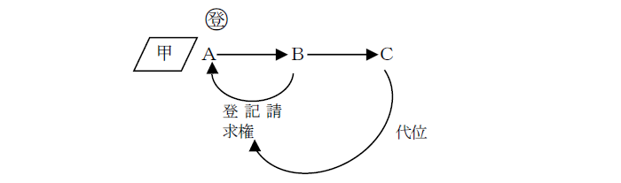
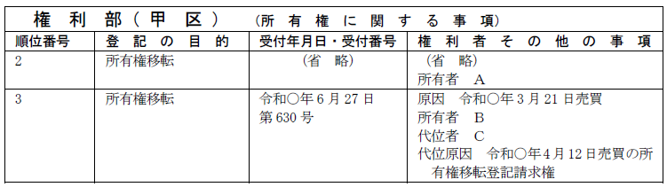
(1) 登記の目的
「所有権移転」等と記載する。
(2) 登記原因及びその日付
「年月日売買」等と記載する。
(3) 申請人
代位される者に「（被代位者）」と記載し、代位者も記載する。
「権利者（被代位者） Ａ
代位者 Ｘ
義務者 Ｂ」等と記載する。
(4) 代位原因
代位原因を記載する必要がある。代位原因とは、被保全債権の発生原因のことである。
※具体例
①「年月日売買の所有権移転登記請求権」
不動産を買い受けた者が、所有権移転登記を受ける前提として代位による登記を申請する場合
②「年月日設定の（根）抵当権設定登記請求権」
（根）抵当権設定登記を受けようとする者が、その前提として代位による登記を申請する場合
③「年月日金銭消費貸借の強制執行」
一般債権者が強制執行をするために、その前提として代位による登記を申請する場合
④「年月日設定の（根）抵当権の実行による競売」
（根）抵当権者が（根）抵当権を実行するために、前提として代位による登記を申請する場合
(5) 添付情報
・代位原因証明情報（不登令7条1項3号）
債権者代位によって登記を申請するときは、申請情報と併せて代位原因証明情報の提供を要する。
代位原因証明情報は、公務員が職務上作成した情報でなければならないわけではなく、登記官が当事者間に債権の存することを確認し得るもので足りる（昭23.9.21民甲3010）。
※具体例
①売買契約書
不動産を買い受けた者が、所有権移転登記を受ける前提として代位による登記を申請する場合
②（根）抵当権設定契約書
（根）抵当権設定登記を受けようとする者が、その前提として代位による登記を申請する場合
③金銭消費貸借契約書
一般債権者が強制執行をするために、その前提として代位による登記を申請する場合
④抵当権の実行としての競売申立て受理証明書
抵当権者が抵当権の実行としての競売を申し立てるにあたり目的不動産の所有者の相続登記を代位申請する場合（昭62.3.10民3.1024）
⑤信託契約証書等、自己が信託契約上において受益者又は委託者であることを証する情報
受益者又は委託者が受託者に代わって信託の登記を申請する場合
なお、登記の目的たる不動産が信託財産であることを証する情報を提供する必要はない。
※代位原因証明情報の添付を省略できる場合
既登記抵当権者がその抵当物件の所有者に代位してする不動産の表示変更等の登記申請書の添付書類欄に、「代位原因を証する書面は年月日受付第何号をもって本物件に抵当権設定登記済につき添付省略」と記載があれば、その代位原因を証する情報の添付がない場合でもすることができる（昭35.9.30民甲2480）。代位権があることが登記記録から推認されるためである。
なお、当該先例は、抵当不動産の表示の変更・更正の代位登記の申請のみを対象としているものと考える（登研473P.115）。よって、抵当権者が目的不動産の相続登記等を代位により申請するには、上記④のとおり、代位原因証明情報の添付を要する。
(6) 登録免許税
一般的な登記に応じた額である。
1. 所有権に関する登記
(1) 代位登記の対象
所有権保存の登記のような単独申請による登記も、債権者が代位して単独で申請できる。
ex.債権者Ａが債務者Ｂ又は物上保証人Ｃと抵当権の設定契約をした場合、その不動産に所有権の登記がなかったときは、債権者Ａは代位により所有権保存登記を申請することができる（昭23.9.21民甲3010）。
(2) 代位者
①ＡからＢ、ＢからＣへと順次不動産が売却されたが、登記名義がＡにある場合、Ｂの債権者Ｄは、Ｂに代位してＡとともにＡからＢへの所有権移転の登記を申請することができるか？
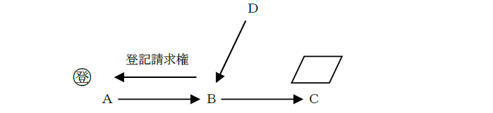
→できる（最判昭46.11.30）。
②不動産の所有権がＡからＢ、ＢからＣ、ＣからＤへと順次移転した場合において、ＤはＣがＢに代位してする、ＡからＢへの所有権移転の登記請求権を代位行使して、Ａを登記義務者として、登記申請をすることができるように、代位権をさらに代位することもできるか？
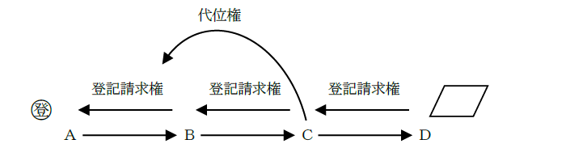
→できる（登研305P.75参照）。代位の代位も可能である。
③仮登記権利者は、仮登記義務者の承諾を証する情報を提供して仮登記を申請する場合において、仮登記義務者の登記名義に変更が生じているときは、仮登記義務者の仮登記の申請に関する承諾を証する情報を代位原因証明情報として、仮登記義務者である所有権の登記名義人の住所等の変更の登記を申請することができるか？
→できる。
④未登記の国有地について、私人が国に対して時効取得を原因とする所有権移転登記手続請求訴訟に勝訴した場合、当該私人は、国に代位して、当該判決書の正本を代位原因証明情報として、国名義の所有権の保存の登記を申請することができるか？
→できる（昭55.11.25民3.6757）。
(3) 売買と代位
①不動産の売買において、登記権利者である買主が登記義務者である売主に代位して登記申請をすることができるか？
→できない（昭24.2.25民甲389）。
②不動産の売買において、売主Ａが買主Ｂに対して他に債権を有している場合、Ｂが所有権移転の登記申請に協力しないときは、登記義務者であるＡは、債権者として、登記権利者であるＢに代位して所有権移転の登記を申請することができるか？
→できる（昭24.2.25民甲389）。
不動産の買主からしてみると、買主への所有権移転の登記をしても、債権者である売主が自己の買った不動産を差し押さえ、競売されてしまうおそれがあるので、登記権利者の立場であるにもかかわらず移転登記をしないということもあり得るため、売主には、代位の登記をする実益があるからである。
(4) 相続人に対する代位
①共同相続人の1人に対する債権者は、債務者である共同相続人に代位して、共同相続人全員の共有名義に相続登記を申請することができるか？
→できる（昭49.2.12民3.1018）。
共同相続人の1人は、民法252条5項の保存行為として、共同相続人全員のために所有権保存の登記を申請することができるためである。
②債権者は、債務者の相続人が法定代理人のない未成年者であっても、相続の登記を代位により申請することができるか？
→できる（昭14.12.11民甲1359）。
③相続の登記がされた後、土地を2筆に分筆し、分筆後の土地をそれぞれ相続人らの一部の者の単有又は共有とする旨の遺産分割の調停が成立した場合、自己の所有権の登記を受ける前提として、分筆登記を申請しなければならないが、土地の分筆登記の申請に、他の相続人らの協力が得られないときは、土地の一部を相続することとなった者は、調停調書の正本又は謄本を代位原因証明情報として、協力を得られない者に代位して、分筆登記の申請をすることができる（平2.4.24民3.1528）。
2. （根）抵当権に関する登記について
(1) 変更・更正登記
①債権者Ａが債務者Ｂ所有の不動産（又は債務者ＣのためにＢ所有の不動産）に対し、抵当権設定の登記をした後、その抵当権設定登記事項中に変更を生じた場合の変更登記（ex.債務者の氏名変更の登記）及び抵当権設定登記事項中に錯誤のあった場合の更正登記（ex.債権額の更正登記）は、債権者の代位により申請することができるか？
→できない（大4.11.6民1701、昭36.8.30民3.717）。
権利者が義務者に代位して単独で登記の申請をすることはできない。抵当権の登記事項の変更登記及び更正登記は、抵当権者と設定者の共同申請によりするものである。そこで、抵当権者が設定者に代位して単独で登記の申請をすることができるとすると、共同申請主義（60条）が無意味なものになる。
②抵当権設定登記後、抵当権者が抵当権を実行するにあたり、抵当権設定者に代位して所有権の登記名義人の氏名等の変更･更正の登記を申請することができるか？
→できる（大4.11.6民1701）。
所有権登記名義人の氏名変更（更正）登記は、抵当権設定者（本来の申請人）が単独で申請することができる登記であるためである。
(2) 元本確定登記
①根抵当権者は、根抵当権設定者に対して根抵当権の元本確定の登記を命ずる確定判決を得て、単独で元本確定の登記を申請することができる（昭54.11.8民3.5731）。
②根抵当権設定者の根抵当権者に対する元本の確定請求によって元本が確定した後、当該根抵当権の被担保債権を代位弁済した者は、根抵当権者に代位して元本の確定の登記を申請することは認められているが、代位弁済者が元本確定の登記を単独で申請するためには、根抵当権設定者に対し、元本確定の登記手続を命ずる判決を得なければならない（昭55.3.4民3.1196）。
3. 賃借権に関する登記について
賃貸借契約が締結された場合において、賃借人が当該賃借権設定登記請求権を保全するために、賃貸人に代位して、登記義務者とともに賃貸人名義とする所有権移転登記をすることができるか否かは、賃借権設定登記をする旨の特約の有無による。
(1) 賃借権の設定登記をする特約がある場合
賃借権者と設定者の間で賃借権の設定登記をする旨の特約がある場合には、賃借人は、賃貸人に対して賃借権設定登記請求権を有するため（大判大10.7.11）、当該賃借権設定登記請求権を保全するために、賃貸人に代位して、登記義務者とともに賃貸人名義とする所有権移転登記をすることができる。
(2) 賃借権の設定登記をする特約がない場合
賃借権の設定登記をする旨の特約のない場合には、賃借人は、賃貸人に対して、保全すべき賃借権設定登記請求権を有しないため、賃貸人に代位して、登記義務者とともに賃貸人名義とする所有権移転登記をすることができない。
第11章 更正・抹消等
第１節 更正の登記
権利の変更の登記又は更正の登記は、登記上の利害関係を有する第三者の承諾がある場合及び当該第三者がない場合に限り、付記登記によってすることができる（66条）。
1. 更正登記の要件
「登記の当初から錯誤、遺漏により登記事項の一部が実体法上の権利関係と一致しない場合」にすることができる。更正の登記は、更正の前後を通じて同一性がなければならない。
ex.登記名義人の氏名を渡辺一とすべきところ、誤って渡部一と登記してしまった。
ex.登記名義人をＡＢ2人の共有名義にすべきところ、誤ってＡＢＣ3人の共有名義で登記がなされた場合には、更正の前後を通じて同一性があるといえるので、更正の登記を申請ですることができる。
しかし、登記名義人をＤとすべきところ誤ってＥとした場合には、更正の前後で同一性があるとはいえない(=登記名義人がかぶっていない)ので、更正の登記は申請できない（昭53.3.15民3.1524）。判決によっても同様である（昭53.3.15民3.1524）。
2. 更正登記の可否
(1) 登記名義人の更正
以下のような更正登記は前後の同一性がないため、することができない。
①ＡからＡＢ共有名義に更正後の、ＢＣ名義への更正（登研236P.72参照）
→結果的に、ＡからＢＣ名義に更正することとなり、名義人が入れ替わることとなる。
cf. Ａ→ＡＢへの更正後、再度ＡＢ→Ａとする更正の登記はできる。更正の前後を通じて登記としての同一性があるからである。
②抵当権者ＡをＢとする抵当権の更正
もっとも、抵当権者Ｂ、債務者Ａとする抵当権設定登記の申請情報と併せて提供された登記原因証明情報に抵当権者Ａ、債務者Ｂとあったが、当該申請情報どおりの登記がされた場合には、錯誤を原因として抵当権者をＡとする抵当権の登記名義人の更正の登記を申請することができる（昭35.6.3民甲1355）。この場合、更正登記の前後において同一性が害されないからである。
③Ａが単独で所有し、その旨の登記がされている甲建物に、Ｂが増築を施したので、ＡＢ間で甲建物の所有権の一部をＡからＢに移転する旨の合意がされた場合には、甲建物の所有権の登記名義人をＡからＡ及びＢとする更正の登記を申請することはできない（登研540P.170）。この場合、登記の当初から錯誤があったものではないからである。
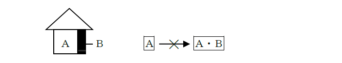
(2) 登記原因等の更正
①売買予約による売買の本契約が成立し所有権移転の登記を申請する際、その申請書に仮登記の表示及びその本登記である旨の記載を欠いていたため、別個のあらたな順位番号をもって登記が完了していることを後日発見した場合、仮登記に基づく所有権移転の本登記として移記する更正登記はできない（昭36.3.31民甲773）。
②信託を原因として、委託者Ａから受託者Ｂ名義に所有権移転登記がされている場合に、錯誤を原因として登記原因を売買とする更正の登記の申請をすることができない（登研483P.157）。
③ＡからＢに対する贈与を原因とする所有権の移転の登記の原因を、共有物分割とする更正の登記をすることはできない。共有物分割を登記原因とするためには、前提として登記記録上、共有状態にある必要があるからである。
④乙区1番で、令和○年6月1日付けの金銭消費貸借契約に基づく債権を被担保債権とする抵当権の設定の登記がされ、乙区1番付記1号で、令和○年7月1日付けの金銭消費貸借契約に基づく債権を被担保債権とする転抵当権の設定の登記がされている場合に、当該転抵当権の被担保債権の成立の日を令和○年5月1日とする更正の登記を申請することができる。
(3) 登記事項の更正
①抵当権の債務者をＡからＢにする更正はすることができる（昭37.7.26民甲2074）
抵当権の債務者は、抵当権の登記名義人ではなく、単なる登記事項だからである。これは、根抵当権であっても同様である。
②無利息の定めのある債権を被担保債権とする抵当権の設定の登記に無利息である旨が登記されていないときは、「遺漏」を登記原因として無利息である旨を登記する更正の登記を申請することができる（登研470P.98）。
「無利息」の定めをした場合、申請情報の内容とすべきであるからである。
(4) 更正登記が不要となる場合
・住民票の謄抄本の住所欄中、「市営住宅○号」等の記載がある場合に、これを申請書に記載して差し支えない。当該登記後における申請書に添付されたその者にかかる印鑑証明書が、部屋番号の記載のないものであっても、住所の更正登記を要しない（昭40.12.25民甲3710）。
登記名義人の住所は、原則としては番地までを表示すれば足りるのであるから、印鑑証明書に部屋番号の表示の記載がなくても、番地が同一であり、登記名義人と登記の申請人が同一人であることが確認できれば問題ない。
3. 相続登記後の単独申請による更正登記
(1) 意義
法定相続分による相続登記後に次のⅰ～ⅳの登記をする場合には、所有権の更正の登記によることができ、登記権利者が単独で申請することができる（令5.3.28民二.538）。
ⅰ 遺産分割（協議、審判、調停）による所有権の取得
ⅱ 他の相続人の相続放棄による所有権の取得
ⅲ 特定財産承継遺言による所有権の取得
ⅳ 相続人が受遺者である遺贈による所有権の取得
(2) 登記原因
ⅰ 遺産分割（協議、審判、調停）：「年月日遺産分割」
ⅱ 他の相続人の相続放棄：「年月日相続放棄」
ⅲ 特定財産承継遺言：「年月日特定財産承継遺言」
ⅳ 相続人が受遺者である遺贈：「年月日遺贈」
(3) 添付情報
以下のようなものが該当する（令5.3.28民二.538）。
ⅰ 遺産分割協議書（当該協議書に押印した申請人以外の相続人の印鑑証明書を含む。）、遺産分割の審判書の謄本（確定証明書付）、遺産分割の調停調書の謄本
ⅱ 相続放棄申述受理証明書及び相続を証する市町村長その他の公務員が職務上作成した情報
ⅲ及びⅳ 遺言書（家庭裁判所の検認が必要なものにあっては、当該検認の手続を経たもの）
1. 意義
登記官は、登記の錯誤又は遺漏が登記官の過誤によるものであるときは、遅滞なく、当該登記官を監督する法務局又は地方法務局の長の許可を得て、登記の更正をしなければならない（67条2項本文）。
ex.抵当権の債権額が3000万円であるにもかかわらず、登記官が誤って300万円と登記してしまった場合
ただし、登記上の利害関係を有する第三者がある場合にあっては、当該第三者の承諾があるときに限り、することができる（67条2項ただし書）。登記上の利害関係を有する第三者の承諾がない場合にあっては、主登記によっても、登記官の職権で更正登記をすることはできない。付記登記で登記を受ける当事者の権利を奪うことになるからである。
2. 登記官の過誤によらない場合
登記官は、権利に関する登記に錯誤又は遺漏があることを発見したときは、遅滞なく、その旨を登記権利者及び登記義務者（登記権利者及び登記義務者がない場合にあっては、登記名義人）に通知しなければならない（67条1項本文）。
ただし、登記権利者、登記義務者又は登記名義人がそれぞれ2人以上あるときは、その1人に対し通知すれば足りる（67条1項ただし書）。
第２節 抹消登記
権利に関する登記の抹消は、登記上の利害関係を有する第三者がある場合には、当該第三者の承諾があるときに限り、申請することができる（68条）。
1. 詐害行為取消判決と登記
債務者が行った財産の処分行為を詐害行為として取り消す旨の判決が確定した場合（民法424条）、その処分行為により所有権移転の登記や抵当権設定の登記がされていたときには、「詐害行為取消判決」を登記原因として、その登記の抹消をすることができる。
ex.Ａの債権者Ｃが、ＡのＢに対する不動産の売買を詐害行為として取り消した場合において、Ｂ名義の登記がされていた場合には、「詐害行為取消判決」を登記原因として、その所有権移転の登記を抹消することができる。
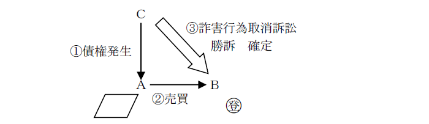
この登記の抹消の登記権利者は債務者であるが、債務者がその登記手続に協力しない場合には、債権者が債務者に代位して、登記を申請することができる（昭38.3.14民甲726）。なお、受益者に対しては判決があるので、結果的に、この場合には、債権者が単独で抹消登記を申請することができる。
ex.上記の事例でＡが抹消登記を申請しない場合には、ＣがＡに代位して所有権移転の登記の抹消登記を申請することができる。Ｂに対しては判決があるので、Ｃが単独で申請することになる。
【申請例145 所有権抹消 詐害行為取消判決】
事例： 令和6年6月26日、ＡＣ間で、債権者Ｃ、債務者Ａとして、金5000万円を、弁済期日を令和○年6月26日とする金銭消費貸借契約を締結し、金5000万円がＡに交付された。その後、令和○年1月28日Ａが無資力にもかかわらずＢにＡ所有の甲土地を売却し、甲土地甲区3番で登記がなされたため、令和○年3月30日、Ｃは、Ｂを被告として詐害行為取消訴訟を提起した。Ｃは、当該訴訟においてＡＢ間の売買契約の取消し、Ｂへの所有権移転登記の抹消を内容とする勝訴判決を得、令和○年6月28日に確定した。
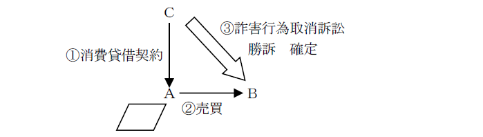
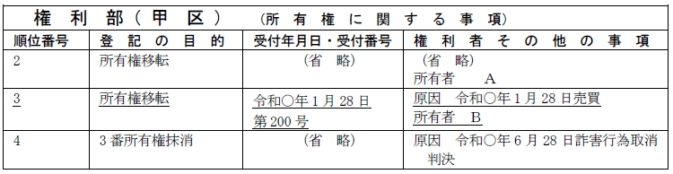
2. 申請情報の内容
(1) 登記の目的
「◯番所有権抹消」「◯番抵当権抹消」等と記載する。
(2) 登記原因及びその日付
登記原因は「詐害行為取消判決」と記載し、日付は判決確定の日である。
(3) 申請人
権利者（被代位者）として、債務者を記載する。また、抵当権の抹消の登記義務者は、受益者（詐害行為取消訴訟の被告）を記載する。代位者は、債権者（原告）を記載する。
(4) 代位原因
「年月日金銭消費貸借の強制執行」等とし、日付は債権者と債務者が金銭消費貸借契約を締結した日等である。
(5) 添付情報
①登記原因証明情報（不登令7条1項5号ロ(1)）
判決書正本及び確定証明書を提供する。
②代位原因証明情報
代位による登記においては、「代位原因を証する情報」（代位原因証明情報）を提供しなければならない（不登令7条1項3号）。
なお、判決による登記においては、登記原因証明情報として「判決書正本」及び「確定証明書」を提供しなければならないが（不登令7条1項5号ロ(1)）、詐害行為取消判決がされた場合には、当該判決書には、債権者が取消権を有することが記載されているので、判決書正本及び確定証明書をもって代位原因証明情報とすることができる（昭38.3.14民甲726）。つまり、登記原因証明情報として提供する「判決書正本」及び「確定証明書」が代位原因証明情報を兼ねることになる。
3. 登記申請の可否
甲の乙に対する債権を担保するために、乙は自己所有の土地に抵当権を設定したが、これが詐害行為に当たるとして、Ａ、Ｂ、Ｃが詐害行為取消訴訟を提起し、Ａについてのみ勝訴の判決が確定した。この場合、Ａは、抵当権設定登記の抹消登記の代位申請をすることができるか？
→できる（昭35.5.18民甲1118）。
詐害行為取消権は、各債権者が有する個別の権利であり、複数の債権者から共同して詐害行為取消訴訟を提起しても、通常の共同訴訟であるので、原告（債権者）の1人が勝訴判決を得ることがあるからである。
1. 権利消滅の定めの登記
登記の目的である権利の消滅に関する定めがあるときは、その定めが登記事項となる（59条5号）。
2. 権利消滅の定めの登記に基づく抹消登記
権利が人の死亡又は法人の解散によって消滅する旨が登記されている場合において、当該権利がその死亡又は解散によって消滅したときは、登記権利者は、人の死亡又は法人の解散を証する市区町村長、登記官その他の公務員が職務上作成した情報を提供して、単独で当該権利に係る権利に関する登記の抹消を申請することができる（69条、不登令別表26添付情報イ）。
ex.Ａ所有の土地上に、Ｂが死亡した時は地上権が失効する旨の付記登記があるＢを地上権者とする地上権設定登記がされている場合において、Ｂが死亡したときは、Ａは、Ｂの死亡を証する戸籍謄本等を申請情報と併せて提供して、単独で当該地上権設定登記の抹消を申請することができる。
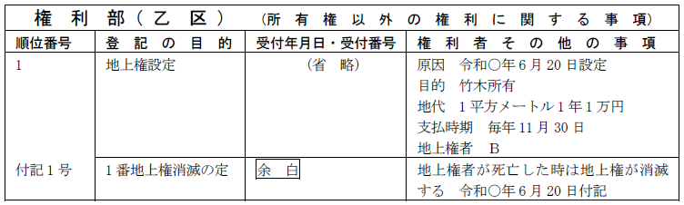
cf. 権利失効の定めの登記
ex.Ｂが所有している土地に、Ｂが死亡した時は所有権移転が失効する旨の付記登記があるＡからＢへの所有権移転登記がされている場合において、Ｂが死亡したときは、Ａは、Ｂの死亡を証する戸籍謄本等を申請情報と併せて提供して、単独で当該所有権移転登記の抹消を申請することはできず、所有権移転登記を申請することになる。失効するまでＢは有効に所有権を有していたのであり、失効とともにＡに所有権が復帰するからである（大決大3.8.24）。
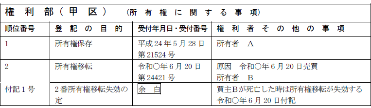
【申請例】
1. 登記が不動産登記法25条1号から3号まで又は13号に該当する場合
登記官は、権利に関する登記を完了した後に当該登記が不動産登記法25条1号から3号まで又は13号に該当することを発見したときは、登記権利者及び登記義務者並びに登記上の利害関係を有する第三者に対し、1か月以内の期間を定め、当該登記の抹消について異議のある者がその期間内に書面で異議を述べないときは、当該登記を抹消する旨を通知しなければならない（71条1項）。
そして、登記官は、異議を述べた者がある場合において、当該異議に理由がないと認めるときは決定で当該異議を却下し、当該異議に理由があると認めるときは決定でその旨を宣言し、かつ、当該異議を述べた者に通知しなければならず、異議を述べた者がないとき又は異議を却下したときは、職権で、登記を抹消しなければならない（71条3項、4項）。
2. 登記が不動産登記法25条1号から3号まで又は13号に該当する場合以外の場合における職権抹消の可否
①同一建物について二重に表示の登記がされた場合において、いずれの登記記録にも権利の登記がされていないときは、先にされた表示の登記と後にされた表示の登記のいずれを、どのような手続で抹消すべきか？
→後にされた表示の登記を職権で抹消する（昭37.10.4民甲2820）。
②確定前の根抵当権について、根抵当権者ＡからＢへ一部譲渡による一部移転の登記をするとともに「優先の定め」の付記登記がされている場合において、その後、当該一部移転の登記が抹消されたときは、登記官は当該優先の定めの登記を職権で抹消することができるか？
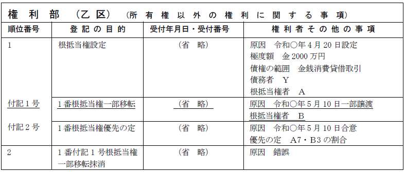
→当該「優先の定め」の付記登記は、当事者の申請によって抹消すべきであり、登記官が職権で抹消することはできない（登研540P.169）。
③1番抵当権から2番抵当権への順位の譲渡の登記がされた後、2番抵当権の登記が抹消された場合、当該順位の譲渡の登記は、登記官の職権により抹消されるか？
→1番抵当権に付記された順位譲渡の登記は、登記官の職権で抹消される（平21.2.20民2.500）。